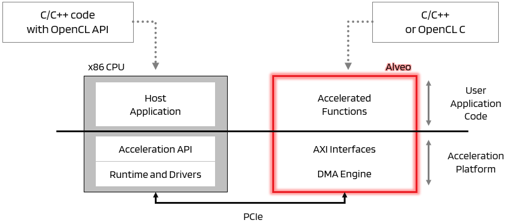

Vitis™ Hardware Acceleration TutorialsSee Vitis™ Development Environment on xilinx.com |
Section 1 - Workflows¶
In this section…: Quick overview of the Vitis flow and description of the host/kernel paradigm.
The Vitis Flow¶
To enable hardware acceleration, the code is split between an host and one or several kernels. The host program, written in C/C++ uses API abstractions like OpenCL, runs on a host processor (a x86 server or an ARM processor in the case of embedded platforms). The hardware accelerated kernels run onto the programmable logic of a Xilinx device.
The API calls, processed by Xilinx runtime (XRT), manage process transactions between the host program and the hardware accelerators (kernels). Communication between the host and the kernel(s), including control and data transfers, occurs across the PCIe® bus or an AXI bus for embedded platforms.
In a typical application, the host first transfers data to be operated on by the kernel from host memory into global memory. The kernel subsequently operates on the data, storing results back to the global memory. Upon kernel completion, the host transfers the results back into the host memory. Data transfers between the host and global memory introduce latency, which can be costly to the overall application. To achieve acceleration in a real system, the benefits achieved by the hardware acceleration kernels must outweigh the added latency of these data transfers.
In the Vitis™ core development flow helps manage, configure, build and run a host application and hardware accelerated kernels.
The host application is developed in C/C++ with OpenCL™ API calls
The hardware kernels can be developed in C/C++, OpenCL C, or RTL.
Here is a diagram of the functional blocks involved for a x86 server connected to an Alveo acceleration card:

In the next section, you’ll learn how to prepare your environment to run the tutorial.
Copyright© 2020 Xilinx